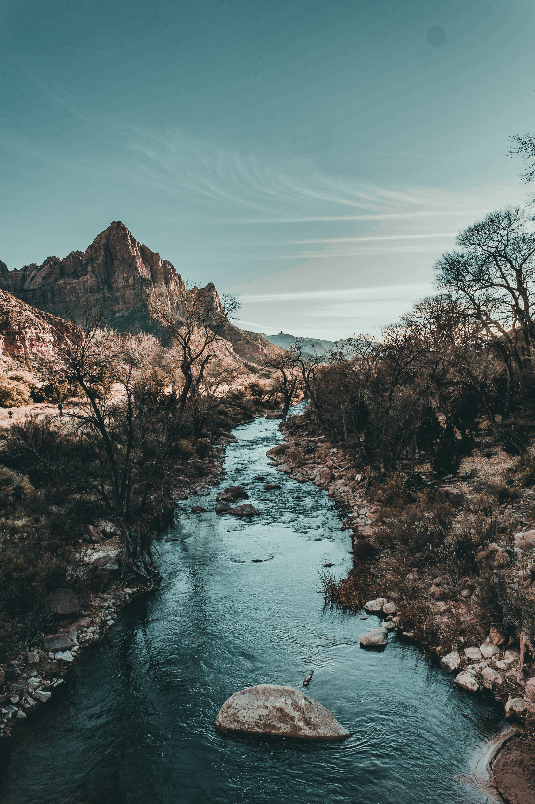

- Logout
- Signup
- Login
Hey Nick, Welcome back
Edit Questioner Meetup
Preview
MEETUP TITLE: Cycling is such an enjoyable sport because you get to burn calories while exploring and sightseeing, plus de-stress and bond with friends.
MEETUP DETAILS: This is a great biking path from Westlands to Muthaiga around Karura Forest to the United Nations. The route is approximately 17 miles, but it also depends on the course taken. There are designated trails in Karura Forest for people to explore and it makes for a great Saturday activity with friends.There are many places to cycle in Limuru because the road doesn’t have many cars and the views of the tea plantations are amazing. This road also has some turns and sometimes it gets cold and misty during the cold months like June and July. Fog may impair visibility, so the best months are the drier ones.

TAGS: upcountry, biking, hydrate, quads, beatufil world, free-spirit